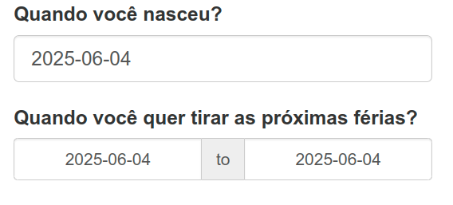
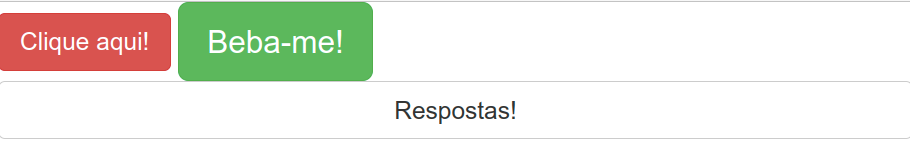
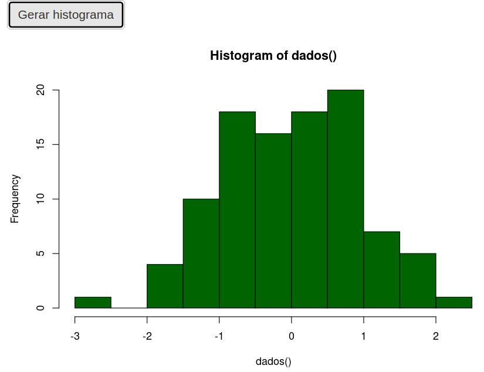
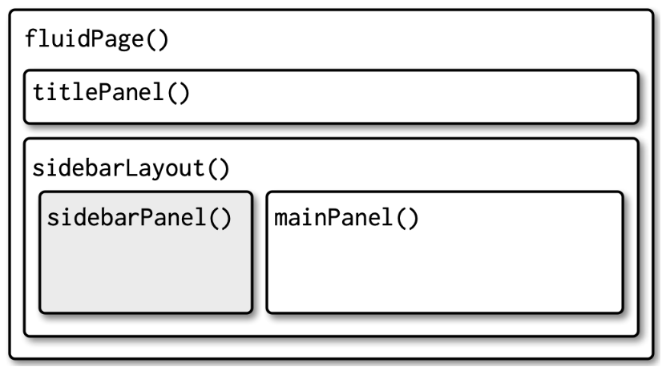
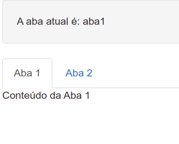

Capítulo 8 Shiny
8.1 Introdução ao Shiny
Para começar a trabalhar com Shiny, primeiro instale o pacote:
Para criar um novo app, salvar um script com a extensão .R, exemplo app.R. A partir disso, pode adicionar rapidamente o modelo do aplicativo digitando “shinyapp” e pressionando Shift+Tab.
A estrutura de um App Shiny, é composta de:
1. Interface do Usuário (UI): A UI define a aparência do aplicativo - o que o usuário vê e com o que interage.
2. Servidor (Server): O servidor contém a lógica do aplicativo - como ele responde às interações do usuário.
3. Função que combina ambos UI e Server: Para criar o aplicativo, combinamos a UI e o servidor com a função shinyApp(ui = ui, server = server)
RunApp: executa o aplicativo
Stop (no RStudio) ou fechar a janela do app: encerra o aplicativo
8.1.1 Adicionando controles de UI
library(shiny)
ui <- fluidPage(
selectInput("dataset", label = "Conjunto de Dados",
choices = ls("package:datasets")),
verbatimTextOutput("resumo"),
tableOutput("tabela")
)
server <- function(input, output, session) {
}
shinyApp(ui, server)fluidPage(): função de layout que define a estrutura visual básica da página.selectInput(): controle de entrada que permite ao usuário interagir com o aplicativo fornecendo um valor. Neste caso, é uma caixa de seleção com o rótulo “Conjunto de Dados” e permite escolher um dos conjuntos de dados que vêm com o R.verbatimTextOutput()etableOutput(): controles de saída que informam ao Shiny onde colocar a saída renderizada.verbatimTextOutput()exibe código etableOutput()tabelas.- Vemos apenas a entrada, não as duas saídas, porque ainda não informamos ao Shiny como a entrada e as saídas estão relacionadas.
8.1.2 Adicionando comportamento ao Server
library(shiny)
ui <- fluidPage(
selectInput("dataset", label = "Conjunto de Dados",
choices = ls("package:datasets")),
verbatimTextOutput("resumo"),
tableOutput("tabela")
)
server <- function(input, output, session) {
output$resumo <- renderPrint({
dataset <- get(input$dataset, "package:datasets")
summary(dataset)
})
output$tabela <- renderTable({
dataset <- get(input$dataset, "package:datasets")
dataset
})
}
shinyApp(ui, server)- Cada input e output na UI tem identificarodes (IDs). Chamando
input$IDeoutput$IDno servidor é a forma de identificar no shiny uma entrada e uma saída específica, com base no seu ID. output$ID: indica que você está fornecendo a receita para a saída do Shiny com esse ID.- Funções de renderização (render{Type}): encapsulam o código fornecido e conectam inputs e outputs.
- Cada função render{Type} é projetada para produzir um tipo específico de saída (texto, tabelas e gráficos) e geralmente é pareada com uma função {type}Output. Exemplo,
renderPrint()é pareado comverbatimTextOutput()erenderTable()é pareado comtableOutput().
Observações:
- O resumo e a tabela são atualizados sempre que você altera o conjunto de dados de entrada.
- Essa dependência é criada implicitamente, pois utilizamos
input$datasetnas funções de saída. input$dataseté preenchido com o valor atual do componente de interface do usuário com iddatasete fará com que as saídas sejam atualizadas automaticamente sempre que esse valor for alterado.- Essa é a essência da reatividade: as saídas reagem (recalculam) automaticamente quando suas entradas são alteradas.
8.1.3 Expressões Reativas
São usadas para evitar códigos duplicados. No exemplo anterior, o código a seguir é repetido 2 vezes.
Para criar uma expressão reativa:
Para chamar o seu valor, usamos: expressao_reativa().
A expressão reativa só é executada na primeira vez que é chamada e, em seguida, armazena o resultado em cache até que ele precise ser atualizado, deixando o código mais eficiente.
Atualizando o app com a expressão reativa:
library(shiny)
ui <- fluidPage(
selectInput("dataset", label = "Conjunto de Dados",
choices = ls("package:datasets")),
verbatimTextOutput("resumo"),
tableOutput("tabela")
)
server <- function(input, output, session) {
# Criando uma expressão reativa
dataset <- reactive({
get(input$dataset, "package:datasets")
})
output$resumo <- renderPrint({
# Chamando-a como uma função
summary(dataset())
})
output$tabela <- renderTable({
dataset()
})
}
shinyApp(ui, server)O aplicativo se comporta de forma idêntica, mas funciona um pouco mais eficientemente, pois só precisa recuperar o conjunto de dados uma vez, e não duas.
Exercícios - Seção 8.1
1. Crie um aplicativo que cumprimente o usuário pelo nome. Considerando as funções abaixo, organize e identifique quais delas serão necessárias para esta finalidade.
tableOutput("hipoteca")
output$saudacao <- renderText({
paste0("Olá ", input$nome)
})
numericInput("idade", "Quantos anos você tem?", value = NA)
textInput("nome", "Qual é o seu nome?")
textOutput("saudacao")
output$histogram <- renderPlot({
hist(rnorm(1000))
}, res = 96)2. Suponha que seu amigo queira criar um aplicativo que permita ao usuário definir um número (x) entre 1 e 50 e exiba o resultado da multiplicação desse número por 5. Esta é a primeira tentativa dele:
library(shiny)
ui <- fluidPage(
sliderInput("x", label = "Se x é", min = 1, max = 50, value = 30),
"então x vezes 5 é",
textOutput("produto")
)
server <- function(input, output, session) {
output$produto <- renderText({
x * 5
})
}
shinyApp(ui, server)Mas infelizmente tem um erro. Você pode ajudá-lo a encontrar e corrigir o erro?
3. Expanda o aplicativo do exercício anterior para permitir que o usuário defina o valor do multiplicador, y, para que o aplicativo produza o valor de x * y. O resultado final deve ser semelhante a este:

4. Considere o aplicativo a seguir, que adiciona algumas funcionalidades adicionais ao aplicativo descrito no exercício anterior. O que há de novo? Como você poderia reduzir a quantidade de código duplicado no aplicativo usando uma expressão reativa?
library(shiny)
ui <- fluidPage(
sliderInput("x", "Se x é", min = 1, max = 50, value = 30),
sliderInput("y", "e y é", min = 1, max = 50, value = 5),
"então, (x * y) é", textOutput("produto"),
"e, (x * y) + 5 é", textOutput("produto_mais5"),
"e (x * y) + 10 é", textOutput("produto_mais10")
)
server <- function(input, output, session) {
output$produto <- renderText({
prod <- input$x * input$y
prod
})
output$produto_mais5 <- renderText({
prod <- input$x * input$y
prod + 5
})
output$produto_mais10 <- renderText({
prod <- input$x * input$y
prod + 10
})
}
shinyApp(ui, server)5. No aplicativo a seguir, você seleciona um conjunto de dados de um pacote (usando o pacote ggplot2) e o aplicativo imprime um resumo e um gráfico dos dados. Ele também segue boas práticas e utiliza expressões reativas para evitar redundância de código. No entanto, há três bugs no código fornecido abaixo. Você consegue encontrá-los e corrigi-los?
library(shiny)
library(ggplot2)
datasets <- c("economics", "faithfuld", "seals")
ui <- fluidPage(
selectInput("dataset", "Conjunto de dados:", choices = datasets),
verbatimTextOutput("resumo"),
tableOutput("plot")
)
server <- function(input, output, session) {
dataset <- reactive({
get(input$dataset, "package:ggplot2")
})
output$resummo <- renderPrint({
summary(dataset())
})
output$plot <- renderPlot({
plot(dataset)
}, res = 96)
}
shinyApp(ui, server)
8.2 UI básica
A estrutura do UI (front-end) do shiny possibilita diferentes tipos de funções de entrada e saída que permitem capturar diversos tipos de dados e exibir diversos tipos de saída em R.
8.2.1 Entradas
Argumentos das funções de entrada:
inputId(primeiro argumento presente em todas as funções): Este é o identificador usado para conectar o front-end com o back-end. Se sua interface de usuário tiver uma entrada com ID “name”, a função do servidor a acessará cominput$name. OinputIdtem duas restrições:- Deve ser uma string simples contendo apenas letras, números e sublinhados. Deve ser nomeada como uma variável em R.
- Deve ser único.
label(segundo argumento presente na maioria das funções): usado para criar um rótulo legível para o controle.value(terceiro argumento): quando pesente, permite definir o valor padrão.
Principais funções de entrada do Shiny
1. Texto livre
Permite coletar pequenas quantidades de texto com textInput(), senhas com passwordInput() e parágrafos de texto com textAreaInput().
ui <- fluidPage(
textInput("nome", "Qual é o seu nome?"),
passwordInput("senha", "Qual é a sua senha?"),
textAreaInput("historia", "Fale sobre você", rows = 3)
)
2. Entradas numéricas
Para valores numéricos: caixa de texto restrita com numericInput() ou um controle deslizante com sliderInput().
ui <- fluidPage(
numericInput("num", "Número um", value = 0, min = 0, max = 100),
sliderInput("num2", "Número dois", value = 50, min = 0, max = 100),
sliderInput("inter", "Intervalo", value = c(10, 20), min = 0, max = 100)
)
3. Datas
Para coletar um único dia: dateInput(); ou um intervalo de dias: dateRangeInput().
ui <- fluidPage(
dateInput("nascimento", "Quando você nasceu?"),
dateRangeInput("ferias",
"Quando você quer tirar as próximas férias?")
)
4. Escolhas limitadas
Existem duas abordagens diferentes para permitir que o usuário escolha entre um conjunto pré-especificado de opções: selectInput() e radioButtons().
animais <- c("cachorro", "gato", "rato", "pássaro", "outro", "nenhum")
estados <- c("PR", "SC", "SP", "RJ")
ui <- fluidPage(
selectInput("estado", "Qual é o seu estado favorito?",
estados),
radioButtons("animal", "Qual é o seu animal favorito?", animais)
)
Os botões de opção (
radioButtons()) têm dois recursos interessantes: eles mostram todas as opções possíveis, tornando-os adequados para listas curtas.Os menus suspensos (
selectInput()) ocupam a mesma quantidade de espaço, independentemente do número de opções, tornando-os mais adequados para opções mais longas.
Você também pode configurar multiple = TRUEpara permitir que o usuário selecione vários elementos.

5. Botões de ação
Para executar ações: actionButton() ou actionLink().
ui <- fluidPage(
actionButton("clique", "Clique aqui!"),
actionButton("beba", "Beba-me!", icon = icon("cocktail"))
)
Links e botões de ação são mais naturalmente pareados com
observeEvent()oueventReactive()na sua função de servidor.Você pode personalizar a aparência usando o argumento
class“btn-primary”, “btn-success”, “btn-info”, “btn-warning”, ou “btn-danger”.Você também pode alterar o tamanho com “btn-lg”, “btn-sm”, “btn-xs”.
Por fim, você pode fazer com que os botões ocupem toda a largura do elemento em que estão incorporados usando “btn-block”.
ui <- fluidPage(
fluidRow(
actionButton("clique", "Clique aqui!", class = "btn-danger"),
actionButton("beba", "Beba-me!", class = "btn-lg btn-success")
),
fluidRow(
actionButton("resp", "Respostas!", class = "btn-block")
)
)
Exercícios - Seção 8.2.1
1. Quando o espaço é limitado, é útil rotular as caixas de texto com um espaço reservado que aparece dentro da área de entrada de texto. Como você chamaria a funçãotextInput() para gerar a IU abaixo?
2. Leia atentamente a documentação de sliderInput() e tente descobrir como criar um controle deslizante de data, conforme mostrado abaixo.

3. No seu aplicativo Shiny, crie um controle deslizante que permita ao usuário escolher um número entre 0 e 100, variando de 5 em 5. Em seguida, adicione uma funcionalidade de animação, de forma que, ao clicar em um botão de “play”, o controle avance automaticamente pelos valores disponíveis, como se estivesse passando por eles em sequência. Dica: existe um argumento do controle deslizante que permite ativar esse tipo de animação automaticamente.
4. Quando uma lista de opções em um menu suspenso (selectInput()) é muito longa, pode ser útil organizá-la em grupos com rótulos — como se fossem seções ou categorias dentro da lista. Explore como criar esse tipo de organização usando selectInput() no Shiny. Crie um exemplo com pelo menos dois grupos e algumas opções dentro de cada grupo (como o exemplo a seguir).

8.2.2 Saídas
As saídas na UI criam espaços reservados que são posteriormente preenchidos pela função do servidor.
Assim como as entradas, as saídas recebem um ID exclusivo como primeiro argumento. Se a sua especificação de UI criar uma saída com ID “plot”, você a acessará na função do servidor com
output$plot.Cada função de output no front-end (UI) é acoplada a uma função de renderização no back-end (server).
1. Texto
Produza texto com textOutput() e código fixo com verbatimTextOutput().
library(shiny)
ui <- fluidPage(
textOutput("texto"),
verbatimTextOutput("codigo")
)
server <- function(input, output, session) {
output$texto <- renderText({
"Olá, bem vindo! A seguir um resumo de dados:"
})
output$codigo <- renderPrint({
summary(1:10)
})
}
shinyApp(ui, server)Observe que há duas funções de renderização que se comportam de maneira ligeiramente diferente:
renderText()combina o resultado em uma única string e geralmente é emparelhado comtextOutput().renderPrint()imprime o resultado, como se você estivesse em um console R, e geralmente é pareado comverbatimTextOutput().
ui <- fluidPage(
textOutput("texto"),
verbatimTextOutput("imprime")
)
server <- function(input, output, session) {
output$texto <- renderText("Texto com renderText.")
output$imprime <- renderPrint(cat("Texto com renderPrint."))
}2. Tabelas
Há duas opções para exibir quadros de dados em tabelas:
tableOutput()erenderTable()renderizam uma tabela estática de dados, mostrando todos os dados de uma só vez. Útil para resumos pequenos e fixos.dataTableOutput()erenderDataTable()renderizam uma tabela dinâmica. É mais apropriado se você deseja expor um quadro de dados completo ao usuário.
ui <- fluidPage(
tableOutput("estatica"),
dataTableOutput("dinamica")
)
server <- function(input, output, session) {
output$estatica <- renderTable(head(mtcars))
output$dinamica <- renderDataTable(mtcars,
options = list(pageLength = 5))
}Versões mais recentes sugerem usar DTOutput e renderDT do pacote DT para tabelas dinâmicas.
library(shiny)
library(DT)
ui <- fluidPage(
tableOutput("estatica"),
DTOutput("dinamica")
)
server <- function(input, output, session) {
output$estatica <- renderTable(head(mtcars))
output$dinamica <- renderDT(mtcars,
options = list(pageLength = 5))
}
shinyApp(ui, server)3. Gráficos
Você pode exibir qualquer tipo de gráfico R (basico, ggplot2, etc) com plotOutput() e renderPlot().
ui <- fluidPage(
plotOutput("plot", width = "400px")
)
server <- function(input, output, session) {
output$plot <- renderPlot(plot(1:5), res = 96)
}Por padrão,
plotOutput()ocupará toda a largura do contêiner e terá 400 pixels de altura. Você pode substituir esses padrões com os argumentos height e width.Recomenda-se sempre definir
res = 96, pois isso fará com que seus gráficos correspondam o máximo possível ao que você vê no RStudio.Os gráficos são especiais porque são saídas que também podem atuar como entradas.
plotOutput()possui vários argumentos comoclick,dblclickehover. Se passar uma string para eles, comoclick = "plot_click", eles criarão uma entrada reativa (input$plot_click) que você pode usar para manipular a interação do usuário no gráfico, por exemplo, clicando no gráfico.
Exercícios - Seção 8.2.2
1. As funções textOutput() e verbatimTextOutput() devem ser pareadas com qual(is) função(ões) de renderização abaixo:
renderPrint(summary(mtcars))renderText("Bom dia!")renderPrint(t.test(1:5, 2:6))
2. Recrie o aplicativo a seguir, definindo a altura como 300px e a largura como 700px.
library(shiny)
ui <- fluidPage(
plotOutput("plot", width = "400px")
)
server <- function(input, output, session) {
output$plot <- renderPlot(plot(1:5), res = 96)
}
shinyApp(ui, server)3. Atualize o código abaixo para que a tabela exiba apenas os dados e o controle de paginação, removendo os controles de busca e ordenação por colunas. Para isso, use os argumentos adequados para options da função renderDataTable(). Consulte a ajuda da função renderDataTable (?renderDataTable) e a documentação oficial do DataTables para entender como desativar esses controles:
https://datatables.net/reference/option/
8.3 Reatividade básica
8.3.1 A função do servidor
As funções de servidor recebem três parâmetros: input, output e session. Como você nunca chama a função de servidor, nunca criará esses objetos. Em vez disso, eles são criados pelo Shiny quando a sessão inicia, conectando-se a uma sessão específica. Vamos ver algumas formas de evitar erros envolvendo inputs e outputs.
Entradas (input)
O input é um objeto em forma de lista que contém todos os dados de entrada enviados pelo navegador, nomeados de acordo com o ID de entrada. Por exemplo, se sua interface contiver um controle de entrada numérico com um ID contagem, então você pode acessar o valor dessa entrada com input$contagem.
Inicialmente, ele conterá o valor 100 e será atualizado automaticamente conforme o usuário altera o valor no navegador.
Ao contrário de uma lista típica, objetos de input são somente leitura. Se você tentar modificar uma entrada dentro da função do servidor, receberá um erro:
server <- function(input, output, session) {
input$contagem <- 10
}
shinyApp(ui, server)
#> Error: Can't modify read-only reactive value 'contagem'Este erro ocorre porque o input reflete o que está acontecendo no navegador, e o navegador é a “única fonte de verdade” do Shiny.
Além disso, para ler um input no servidor é necessário estar em um contexto reativo criado por uma função como renderText() ou reactive(). Isso permite que as saídas sejam atualizadas automaticamente quando uma entrada muda. Este código ilustra o erro que você verá se cometer este erro:
Saídas (output)
A saída (output) também é um objeto do tipo lista, nomeado de acordo com o ID de saída. A principal diferença é que você o usa para enviar saída em vez de receber entrada. Você sempre usa o objeto output em conjunto com uma função render.
ui <- fluidPage(
textOutput("saudacao")
)
server <- function(input, output, session) {
output$saudacao <- renderText("Olá humano!")
}Assim como o input, o output é exigente quanto à forma como você o utiliza. Você receberá um erro se:
- Esquecer a função
render.
server <- function(input, output, session) {
output$saudacao <- "Olá humano!"
}
shinyApp(ui, server)
#> Error: Unexpected character object for output$saudacao
#> ℹ Did you forget to use a render function?- Tentar ler uma saída.
8.3.2 Programação reativa
Um aplicativo será bem chato se tiver apenas entradas ou apenas saídas. A verdadeira magia do Shiny acontece quando você tem um aplicativo com ambos.
library(shiny)
ui <- fluidPage(
textInput("nome", "Qual é o seu nome?"),
textOutput("saudacao")
)
server <- function(input, output, session) {
output$saudacao <- renderText({
paste0("Olá ", input$nome, "!")
})
}
shinyApp(ui, server)Se você executar o aplicativo verá que a saudação é atualizada automaticamente conforme você digita. Esta é a grande ideia do Shiny: você não precisa informar a saída quando atualizar, porque o Shiny descobre isso automaticamente para você.
Um dos pontos fortes da programação em Shiny é que ela permite que os aplicativos sejam extremamente preguiçosos. Um aplicativo Shiny só fará o mínimo de trabalho necessário para atualizar os controles de saída. Essa preguiça, no entanto, tem uma desvantagem importante. O que há de errado com o código abaixo?
library(shiny)
ui <- fluidPage(
textInput("nome", "Qual é o seu nome?"),
textOutput("saudacao")
)
server <- function(input, output, session) {
output$saudacaoo <- renderText({
paste0("Olá ", input$nome, "!")
})
}
shinyApp(ui, server)Se você observar atentamente, poderá notar que está escrito saudacaoo em vez de saudacao. Isso não gerará um erro no Shiny, mas não fará o que você deseja. A saída saudacaoo não existe, então o código em renderText() nunca será executado.
Importante: Verificar se sua interface de usuário e funções de servidor estão usando os mesmos nomes de identificadores.
O Gráfico Reativo
O gráfico reativo é uma representação gráfica que descreve como as entradas e saídas estão conectadas. Ele define a ordem de execução do aplicativo.
Para o exemplo:
library(shiny)
ui <- fluidPage(
textInput("nome", "Qual é o seu nome?"),
textOutput("saudacao")
)
server <- function(input, output, session) {
output$saudacao <- renderText({
paste0("Olá ", input$nome, "!")
})
}
shinyApp(ui, server)O gráfico reativo fica:

O gráfico reativo contém um símbolo para cada entrada e saída, e conectamos uma entrada a uma saída sempre que a saída acessa a entrada. Este gráfico informa que saudacao precisará ser recomputado sempre que nome for alterado. Frequentemente descreveremos essa relação como saudacao tendo uma dependência reativa em nome.
O gráfico reativo é uma ferramenta poderosa para entender como seu aplicativo funciona. À medida que seu aplicativo se torna mais complexo, muitas vezes é útil fazer um esboço rápido e detalhado do gráfico reativo para lembrar como todas as peças se encaixam.
No caso do código envolver expressões reativas, esta informação também deve ser adicionada ao gráfico reativo.
Exemplo:
library(shiny)
ui <- fluidPage(
textInput("nome", "Qual é o seu nome?"),
textOutput("saudacao")
)
server <- function(input, output, session) {
frase <- reactive(paste0("Olá ", input$nome, "!"))
output$saudacao <- renderText(frase())
}
shinyApp(ui, server)Neste caso, o gráfico reativo fica:

Uma expressão reativa é desenhada com ângulos em ambos os lados porque conecta entradas a saídas.
Exercícios - Seção 8.3.2
1. Dada esta UI:
Corrija os erros encontrados em cada uma das três funções de servidor abaixo. Primeiro, tente identificar o problema apenas lendo o código; depois, execute o código para garantir que o corrigiu.
server1 <- function(input, output, server) {
input$saudacao <- renderText(paste0("Olá ", nome))
}
server2 <- function(input, output, server) {
saudacao <- paste0("Olá ", input$nome)
output$saudacao <- renderText(saudacao)
}
server3 <- function(input, output, server) {
output$saudacaoo <- paste0("Olá", input$nome)
}2. Desenhe o gráfico reativo para cada função de servidor a seguir:
server1 <- function(input, output, session) {
c <- reactive(input$a + input$b)
e <- reactive(c() + input$d)
output$f <- renderText(e())
}
server2 <- function(input, output, session) {
x <- reactive(input$x1 + input$x2 + input$x3)
y <- reactive(input$y1 + input$y2)
output$z <- renderText(x() / y())
}
server3 <- function(input, output, session) {
d <- reactive(c() ^ input$d)
a <- reactive(input$a * 10)
c <- reactive(b() / input$c)
b <- reactive(a() + input$b)
}3. Por que esse código falhará?
library(shiny)
df <- mtcars
ui <- fluidPage(
selectInput("var", NULL, choices = colnames(df)),
verbatimTextOutput("debug")
)
server <- function(input, output, session) {
var <- reactive(df[[input$var]])
range <- reactive(range(var(), na.rm = TRUE))
output$debug <- renderPrint({ range() })
}
shinyApp(ui = ui, server = server)Por que range() e var() são nomes ruins para reativos? Apresente o código corrigido.


8.3.3 observeEvent() e eventReactive()
No Shiny, observeEvent() e eventReactive() são funções essenciais para controlar a reatividade com base em eventos específicos (como cliques em botões, mudanças em inputs, etc.). Elas têm finalidades diferentes, embora ambas respondam a eventos.
observeEvent(): Executa código sem retorno de valor reativo e é útil para efeitos colaterais (ex: atualizar valores, mostrar mensagens, salvar arquivos).
Sintaxe:
Exemplo:
library(shiny)
ui <- fluidPage(
actionButton("meu_botao", "Clique aqui")
)
server <- function(input, output, session) {
observeEvent(input$meu_botao, {
print("O botão foi clicado!")
})
}
shinyApp(ui, server)eventReactive(): Cria um objeto reativo que só é atualizado quando um evento ocorre. Ideal para realizar cálculos pesados ou demorados apenas quando necessário (como ao clicar num botão).
Sintaxe:
Exemplo:
library(shiny)
ui <- fluidPage(
numericInput("n", "Número:", value = 5),
actionButton("calc", "Calcular quadrado"),
verbatimTextOutput("resultado")
)
server <- function(input, output, session) {
quadrado <- eventReactive(input$calc, {
input$n^2
})
output$resultado <- renderText({
paste("Resultado:", quadrado())
})
}
shinyApp(ui, server)Exercícios - Seções 8.1 a 8.3
1. Encontre e corrija o(s) erro(s) dos códigos a seguir:
a.
library(shiny)
ui <- fluidPage(
textInput("nome", "Seu nome:"),
textOutput("mensagem")
)
server <- function(input, output, session) {
output$frase <- renderText({
paste("Olá", input$nome)
})
}
shinyApp(ui, server)b.
library(shiny)
ui <- fluidPage(
numericInput("x", "Número:", value = 1),
textOutput("mensagem")
)
server <- function(input, output, session) {
output$mensagem <- renderPlot({
paste("O valor é", input$x)
})
}
shinyApp(ui, server)c.
library(shiny)
ui <- fluidPage(
numericInput("x", "Número:", value = 5)
)
server <- function(input, output, session) {
output$resultado <- renderText({
paste("Dobro:", 2 * input$x)
})
}
shinyApp(ui, server)d.
library(shiny)
ui <- fluidPage(
numericInput("a", "Número A", value = 0),
numericInput("b", "Número B", value = 0),
textOutput("soma")
)
server <- function(input, output, session) {
soma <- reactive({
input$a + input$b
})
output$soma <- renderText({
paste("A soma é:", soma)
})
}
shinyApp(ui, server)e.
library(shiny)
ui <- fluidPage(
numericInput("a", "Número A", value = 0),
numericInput("b", "Número B", value = 0),
textOutput("soma")
)
server <- function(input, output, session) {
soma <- reactive({
input$a + input$b
})
renderText({
paste("A soma é:", soma())
})
}
shinyApp(ui, server)2. Crie um app com:
textInput()para um nome,selectInput()para escolher uma comida favorita,- Um
textOutput()que exibe algo como: “Olá [nome], sua comida favorita é [comida].”

3. Crie um app com:
- Dois
numericInput()(números a e b), - Um botão (
actionButton(“calcular”)), - Um
textOutput()com a soma de a + b, somente após clicar.
Dica: Use eventReactive().

4. Crie um app com:
- Um
sliderInput()para escolher o número de bins (ex: de 5 a 50), - Um
plotOutput()com um histograma da distribuiçãornorm(100), - O gráfico deve atualizar automaticamente conforme o slider muda.
Dica: Use renderPlot().

5. Crie um app com:
- Um botão
(actionButton())para gerar, quando clicado, 100 números aleatórios(rnorm(100)), - Um
plotOutput()com o histograma desses números, - O gráfico só deve mudar quando o botão for clicado.
Dica: Use eventReactive().

8.4 Layout, temas, HTML
O Shiny fornece diversas funções para organizar a aparência dos aplicativos.
8.4.1 Layouts
Funções de página
- O
fluidPage()configura todo o HTML, CSS e JavaScript que o Shiny precisa. - Além de
fluidPage(), o Shiny oferece outras funções de página que podem ser úteis em situações mais especializadas:fixedPage()efillPage(). fixedPage()funciona como fluidPage(), mas tem uma largura máxima fixa, o que impede que seus aplicativos fiquem excessivamente largos em telas maiores.fillPage()Preenche toda a altura do navegador e é útil se você quiser criar um gráfico que ocupe a tela inteira.
1. Layouts de página única
Página com barra lateral
- Para criar layouts mais complexos, você precisará chamar funções de layout dentro de
fluidPage() - Para criar um layout de duas colunas com entradas à esquerda e saídas à direita, você pode usar
sidebarLayout()junto comtitlePanel(),sidebarPanel()emainPanel().
ui <- fluidPage(
titlePanel(
# Titulo do app
),
sidebarLayout(
sidebarPanel(
# inputs
),
mainPanel(
# outputs
)
)
)
Exemplo: Teorema do Limite Central
ui <- fluidPage(
titlePanel("Teorema do Limite Central"),
sidebarLayout(
sidebarPanel(
numericInput("m", "Número de amostras:", 2, min = 1, max = 100)
),
mainPanel(
plotOutput("hist")
)
)
)
server <- function(input, output, session) {
output$hist <- renderPlot({
means <- replicate(1e4, mean(runif(input$m)))
hist(means, breaks = 20)
}, res = 96)
}
Multi-linhas
Podemos adicionar linhas ou colunas ao aplicativo com fluidRow() e column().
ui <- fluidPage(
fluidRow(
column(4,
...
),
column(8,
...
)
),
fluidRow(
column(6,
...
),
column(6,
...
)
)
)Cada linha é composta por 12 colunas e o primeiro argumento de column() indica quantas dessas colunas ocupar.

Exercícios
1. Leia a documentação de sidebarLayout() e identifique os valores padrão da largura (em colunas) da barra lateral (sidebarPanel) e do painel principal (mainPanel). Recrie a aparência do aplicativo Teorema do Limite Central usando fluidRow() e column()?
2. Modifique o aplicativo Teorema do Limite Central (usando sidebarLayout()) para colocar a barra lateral à direita em vez de à esquerda.
3. Para conjunto de dados mtcars e usando as funções fluidRow() e column(), construa um app Shiny que mostre:
- Titulo do Aplicativo
- Na primeira linha: Dois botões de seleção (selectInput) para escolher duas variáveis numéricas (em colunas lado a lado).
- Na segunda linha: Dois gráficos correspondentes - um histograma da primeira variável e um boxplot da segunda variável, exibidos lado a lado.

2. Layouts de várias páginas
Conjuntos de guias
- A maneira mais simples de dividir uma página em partes é usar
tabsetPanel()junto comtabPanel(). tabsetPanel()cria um contêiner para qualquer número detabPanels(), que por sua vez pode conter quaisquer outros componentes.
Exemplo:
ui <- fluidPage(
tabsetPanel(
tabPanel(title = "Importar dados",
fileInput("file", "Dados", buttonLabel = "Upload..."),
textInput("delim", "Delimitador", ""),
numericInput("skip", "Linhas para pular", 0, min = 0),
numericInput("rows", "Linhas para visualizar", 10, min = 1)
),
tabPanel("Conjunto de parâmetros"),
tabPanel("Resultados")
)
)
Se quiser saber qual aba um usuário selecionou, você pode fornecer o argumento id para tabsetPanel() e ele se tornará uma entrada.
- Argumento
ID: se fornecido, você pode usarinput$idna lógica do seu servidor para determinar qual das abas atuais está ativa. O valor deinput$idcorresponderá ao argumentovaluepassado paratabPanel().
library(shiny)
ui <- fluidPage(
sidebarLayout(
sidebarPanel(
textOutput("painel")
),
mainPanel(
tabsetPanel(
id = "painel_ativo",
tabPanel(title = "Aba 1", value = "aba1", "Conteúdo da Aba 1"),
tabPanel(title = "Aba 2", value = "aba2", "Conteúdo da Aba 2")
)
)
)
)
server <- function(input, output, session) {
output$painel <- renderText({
paste("A aba atual é:", input$painel_ativo)
})
}
shinyApp(ui, server)
Se value for omitido e tabsetPanel tiver um ID, o título será usado.
Listas e barras de navegação
A estrutura de abas com tabsetPanel (que tem exibição horizontal), dificulta representar titulos longos. Deste modo, navlistPanel(), navbarPage() e navbarMenu() possibilitam layouts alternativos que permitem que você use abas com títulos mais longos.
navlistPanel()é semelhante atabsetPanel(), mas em vez de exibir os títulos das guias horizontalmente, ele os exibe verticalmente em uma barra lateral.
ui <- fluidPage(
navlistPanel(
id = "tabset",
"Título 1",
tabPanel("Painel 1", "Conteúdos do painel 1..."),
"Título 2",
tabPanel("Painel 2", "Conteúdos do painel 2..."),
tabPanel("Painel 3", "Conteúdos do painel 3...")
)
)
navbarPage(): exibe os títulos das abas horizontalmente, mas você pode usarnavbarMenu()para adicionar menus suspensos com um nível adicional de hierarquia.
ui <- navbarPage(
"Titulo",
tabPanel("Painel 1", "Conteúdos do painel 1..."),
tabPanel("Painel 2", "Conteúdos do painel 2..."),
navbarMenu("Sub-Painéis",
tabPanel("Painel 4a", "Conteúdos do painel 4-a..."),
tabPanel("Painel 4b", "Conteúdos do painel 4-b...")
)
)
Exercícios
1. Crie um app usando tabsetPanel() com 2 abas para os dados mtcars:
- Aba 1: Gráfico boxplot para a variável
mpg - Aba 2: Gráfico de barras para a variável
cyl.
2. Crie um app com uma barra de navegação lateral (navlistPanel()) com 2 abas, para os dados mtcars:
- Aba 1: contendo um controle (por exemplo,
selectInput()) para escolher uma variável e um gráfico para esta variável. - Aba 2: contendo a tabela de dados
mtcars.
3. Considerando o conjunto de dados iris, crie um app com menu de navegação usando navbarPage() e navbarMenu(), contendo 2 abas:
- Aba 1: um resumo (summary) dos dados (use
verbatimTextOutput()). - Aba 2: contendo 2 sub-abas com: (1) um gráfico de dispersão entre Sepal.Length e Petal.Length e (2) um histograma para Sepal.Width.
8.4.2 Temas
Principais abordagens para aplicar temas em Shiny.
Temas básicos com shinythemes
library(shiny)
library(shinythemes)
ui <- fluidPage(
theme = shinytheme("cerulean"), # Exemplo de tema
titlePanel("App com tema 'cerulean'"),
sidebarLayout(
sidebarPanel(
sliderInput("num", "Escolha um número", 1, 100, 50)
),
mainPanel(
textOutput("res")
)
)
)
server <- function(input, output) {
output$res <- renderText({ paste("Você escolheu", input$num) })
}
shinyApp(ui = ui, server = server)Outros temas disponíveis: cosmo, cyborg, darkly, flatly, journal, lumen, paper, readable
Customização avançada com bslib (Bootstrap themes)
library(shiny)
library(bslib)
ui <- fluidPage(
theme = bslib::bs_theme(
bg = "#0b3d91",
fg = "white",
base_font = "Source Sans Pro"
),
titlePanel("App com bslib e tema 'minty'"),
sidebarLayout(
sidebarPanel(
numericInput("n", "Número", 1)
),
mainPanel(
verbatimTextOutput("result")
)
)
)
server <- function(input, output) {
output$result <- renderPrint({ input$n^2 })
}
shinyApp(ui, server)- bg: Cores para o fundo.
- fg: Cores para o primeiro plano.
- base_font: A fonte padrão.
Para visualizar o exemplo de um tema específico:
theme <- bslib::bs_theme(
bg = "#0b3d91",
fg = "white",
base_font = "Source Sans Pro"
)
bslib::bs_theme_preview(theme)Para personalizar os gráficos de acordo com o tema do app, usar thematic_shiny() do pacote thematic.
library(shiny)
library(thematic)
thematic_shiny() # aplica automaticamente o tema
ui <- fluidPage(
theme = bslib::bs_theme(
bg = "#0b3d91",
fg = "white",
base_font = "Source Sans Pro"
),
titlePanel("App com thematic"),
plotOutput("plot")
)
server <- function(input, output) {
output$plot <- renderPlot({
plot(rnorm(100))
})
}
shinyApp(ui, server)Observações:
- Para criar as cores você pode consultar
colors(), ou consultar os códigos em https://r-charts.com/colors/. - Para fontes, você pode usar o suporte do Google Fonts via a função
font_google()do própriobslib, com diferentes opções em https://fonts.google.com/.
8.4.3 HTML
O Shiny foi projetado para que, como usuário de R, você não precise aprender os detalhes de HTML. No entanto, se você tiver algum conhecimento de HTML e CSS, é possível personalizá-lo ainda mais.
Todas as funções de entrada, saída e layout do shiny: apenas geram HTML. Você pode ver esse HTML executando funções de interface do usuário diretamente no console:
# Código no console
fluidPage(
textInput("nome", "Qual é o seu nome?")
)
# Saída
<div class="container-fluid">
<div class="form-group shiny-input-container">
<label class="control-label" id="nome-label"
for="nome">Qual é o seu nome?</label>
<input id="nome" type="text"
class="shiny-input-text form-control" value=""/>
</div>
</div>É possível adicionar seu próprio HTML ao ui. Uma maneira de fazer isso é incluir HTML literal com a função HTML(), juntamente com a “constante de caractere bruto”, r"()", para facilitar a inclusão de aspas na string:
ui <- fluidPage(
HTML(r"(
<h1>Este é um título</h1>
<p>Este é um texto!</p>
<ul>
<li>Primeiro item</li>
<li>Segundo item</li>
</ul>
)")
)Outra opção é usar o auxiliar HTML fornecido pelo Shiny. Existem funções regulares para os elementos mais importantes, como h1() e p(), e outros podem ser acessados por meio de tags auxiliares. Recriando o HTML acima:
ui <- fluidPage(
h1("Este é um título"),
p("Este é um texto!", class = "minha-classe"),
tags$ul(
tags$li("Primeiro item"),
tags$li("Segundo item")
)
)O livro Outstanding User Interfaces with Shiny, de David Granjon, pode ser consultado para mais detalhes sobre como usar HTML, CSS e JavaScript para criar interfaces de usuário mais atraentes.
Exercícios
1. Crie um aplicativo Shiny simples com um tema usando bslib com as seguintes características:
- Cor de fundo (bg) para um tom de azul claro: #e6f2ff.
- Cor do texto (fg) para um cinza escuro: #2c3e50.
- Fonte base como “Lato” (Google Fonts). Dica: Você pode usar a função
font_google("Lato")para aplicar a fonte.
2. Use bslib::bs_theme_preview() para criar o tema mais feio possível.
8.5 UI dinâmica
O shiny disponibiliza alguns recursos para criar interfaces de usuário dinâmicas, alterando a UI usando código executado na função do servidor.
Existem três técnicas principais para criar interfaces de usuário dinâmicas:
Usando a familia de funções
updatepara modificar parâmetros de controles de entrada.Usando
tabsetPanel()comupdateTabsetPanel()para mostrar e ocultar condicionalmente partes da interface do usuário.Usando
uiOutput()erenderUI()gerando partes selecionadas da interface do usuário com código.
8.5.1 Usando a familia de funções update
Cada controle de entrada, por exemplo textInput(), é pareado com uma função de atualização, por exemplo updateTextInput(), que permite modificar o controle após sua criação.
Exemplos
1. Atualizando parâmetros de slider
No exemplo a seguir, o aplicativo possui duas entradas que controlam o min e max de outra entrada, um controle deslizante. A ideia principal é usar observeEvent() para disparar updateSliderInput() sempre que as entradas min ou max mudarem.
ui <- fluidPage(
numericInput("min", "Mínimo", 0),
numericInput("max", "Máximo", 3),
sliderInput("n", "n", min = 0, max = 3, value = 1)
)
server <- function(input, output, session) {
observeEvent(input$min, {
updateSliderInput(inputId = "n", min = input$min)
})
observeEvent(input$max, {
updateSliderInput(inputId = "n", max = input$max)
})
}
As funções de atualização recebem o nome do input como o argumento inputId. Os argumentos restantes correspondem aos argumentos para construir o input que podem ser modificados após a criação.
2. Resetar controles
O app a seguir ilustra como redefinir os parâmetros dos controles para seus valores iniciais.
ui <- fluidPage(
sliderInput("x1", "x1", 0, min = -10, max = 10),
sliderInput("x2", "x2", 0, min = -10, max = 10),
sliderInput("x3", "x3", 0, min = -10, max = 10),
actionButton("reset", "Resetar")
)
server <- function(input, output, session) {
observeEvent(input$reset, {
updateSliderInput(inputId = "x1", value = 0)
updateSliderInput(inputId = "x2", value = 0)
updateSliderInput(inputId = "x3", value = 0)
})
}3. Atualizar texto de um botão de ação
ui <- fluidPage(
numericInput("n", "Simulações", 10),
actionButton("simula", "Simular")
)
server <- function(input, output, session) {
observeEvent(input$n, {
texto_botao <- paste0("Simular ", input$n, " vezes")
updateActionButton(inputId = "simula",
label = texto_botao)
})
}4. Caixas de seleção hierárquicas
Uma aplicação particularmente importante é facilitar a seleção em uma longa lista de opções possíveis, por meio da filtragem passo a passo.
Considere o conjunto de dados simulado a seguir:
dados <- data.frame(
Cidade = c("Curitiba", "Curitiba", "Curitiba",
"Londrina", "Londrina", "Londrina",
"Maringá", "Maringá"),
Escola = c("GP", "GP", "CM",
"RM", "RM", "MA",
"BJ", "BJ"),
Turma = as.integer(c(2, 3, 2,
1, 2, 3,
1, 2))
)Aplicando alguns filtros a estes dados:
# library(dplyr)
# Filtando a Cidade de Curitiba
cidade_curi <- filter(dados, Cidade == "Curitiba")
cidade_curi## Cidade Escola Turma
## 1 Curitiba GP 2
## 2 Curitiba GP 3
## 3 Curitiba CM 2## [1] "GP" "CM"## Cidade Escola Turma
## 1 Curitiba GP 2
## 2 Curitiba GP 3Neste caso, os dados tem uma hierarquia natural:
- Cada Cidade contém Escolas.
- Cada Escola contém Turmas
Vamos criar uma interface de usuário onde você possa:
- Selecionar um Cidade para ver todas as Escolas.
- Selecionar uma Escola para ver todas as Turmas.
A essência da UI é simples: duas caixas de seleção e uma tabela de saída. As opções para a caixa de seleção Escola serão geradas dinamicamente, então usamos choices = NULL.
Na função de servidor:
- É criado um reativo,
cidade(), que contém as linhas das escolas e turmas que correspondem à cidade selecionada. - Sempre que
cidade()muda, a listachoicesna caixa de seleçãoinput$escolaé atualizada. - É criado outro reativo,
escola(), que contém as linhas decidade()que correspondem à escola selecionada. - Os dados contendo a Cidade e Escola selecionados são exibidos em
output$dados_filtrados.
Neste caso, o cidade e escola foram considerados reativos, por terem sido utilizados em mais de um lugar. Em casos mais simples, isso não seria necessário.
library(shiny)
# Interface do usuário
ui <- fluidPage(
# Menu suspenso para selecionar o Cidade
# (usa os valores únicos da coluna Cidade)
selectInput("cidade", "Escolha uma Cidade:",
choices = unique(dados$Cidade)),
# Menu suspenso para selecionar a Escola
# (inicialmente vazio, será preenchido dinamicamente)
selectInput("escola", "Escolha uma Escola:",
choices = NULL),
# Local onde será exibida a tabela com os dados filtrados
tableOutput("dados_filtrados")
)
# Lógica do servidor
server <- function(input, output, session) {
# Expressão reativa que filtra os dados
# com base na Cidade selecionada
cidade <- reactive({
filter(dados, Cidade == input$cidade)
})
# Quando a cidade mudar,
# atualiza a lista de escolas disponíveis
observeEvent(cidade(), {
# escolas únicas da Cidade filtrada
choices <- unique(cidade()$Escola)
# atualiza o selectInput de escola
updateSelectInput(inputId = "escola", choices = choices)
})
# Expressão reativa que filtra os dados
# com base na escola selecionada
escola <- reactive({
req(input$escola) # garante que a escola foi selecionada
filter(cidade(), Escola == input$escola)
})
# Renderiza a tabela com os dados filtrados
output$dados_filtrados <- renderTable({
escola() %>%
# seleciona as colunas a serem exibidas
select(Cidade, Escola, Turma)
})
}
shinyApp(ui, server)Exercícios
1. Crie um aplicativo com um sliderInput que possibilite ao usuário selecionar um número e um botão de ação que, ao clicado, atualize o label desse slider para o número atual selecionado.
2. Crie um aplicativo com um botão de ação nomeado “trocar” e um selectInput com 3 letras do alfabeto. O objetivo é que ao clicar no botão “trocar” as opções de letras do alfabeto sejam atualizadas para outras letras aleatórias.
3. Crie um aplicativo com 2 inputs numéricos e um slider cujo valor seja atualizado com a média destes inputs, conforme eles forem modificados.
4. Complete a interface de usuário abaixo com uma função de servidor que atualiza as opções de input$county com base em input$state.
library(openintro, warn.conflicts = FALSE)
states <- unique(county$state)
ui <- fluidPage(
selectInput("state", "State", choices = states),
selectInput("county", "County", choices = NULL)
)5. Complete a interface de usuário abaixo com uma função de servidor que atualiza as opções de input$country com base em input$continent. Use output$data para exibir todas as linhas correspondentes.
8.5.2 Usando tabsetPanel() com updateTabsetPanel()
Exemplos
1. Guias condicionais
Imagine que você queira um aplicativo que permita ao usuário simular distribuições normal, uniforme e exponencial. Cada distribuição tem parâmetros diferentes, então precisaremos de uma maneira de mostrar controles diferentes para cada distribuição. Cada distribuição terá sua interface de usuário exclusiva com tabPanel() e, em seguida, serão oranizadas em guias de um arquivo tabsetPanel().
Em seguida, isso será incorporado na interface de usuário que permite ao usuário escolher o número de amostras e mostra um histograma dos resultados.
# Define um conjunto de abas ocultas, onde cada aba contém os
# parâmetros para uma distribuição específica
parameter_tabs <- tabsetPanel(
id = "params", # ID do tabset usado para controle via server
type = "hidden", # Oculta as abas
# (elas são trocadas programaticamente, não clicáveis)
# Aba para distribuição normal: precisa de média e desvio padrão
tabPanel("normal",
numericInput("mean", "mean", value = 1), # Input para média
numericInput("sd", "standard deviation",
min = 0, value = 1) # Input para desvio padrão
),
# Aba para distribuição uniforme: precisa de mínimo e máximo
tabPanel("uniform",
numericInput("min", "min", value = 0), # Limite inferior
numericInput("max", "max", value = 1) # Limite superior
),
# Aba para distribuição exponencial: precisa da taxa
tabPanel("exponential",
numericInput("rate", "rate", value = 1, min = 0)
# Parâmetro de taxa (lambda)
)
)
# Interface do usuário
ui <- fluidPage(
sidebarLayout(
sidebarPanel(
selectInput("dist",
"Distribution", # Menu suspenso para escolher a distribuição
choices = c("normal", "uniform", "exponential")
),
numericInput("n", "Number of samples",
value = 100), # Quantidade de amostras
parameter_tabs # Os inputs de parâmetros definidos acima
),
mainPanel(
plotOutput("hist") # Área para exibir o histograma
)
)
)
# Função do servidor
server <- function(input, output, session) {
# Observa a escolha da distribuição e atualiza o tabsetPanel correspondente
observeEvent(input$dist, {
updateTabsetPanel(inputId = "params",
selected = input$dist) # Ativa a aba correspondente à distribuição
})
# Gera a amostra com base na distribuição e nos parâmetros escolhidos
sample <- reactive({
switch(input$dist,
normal = rnorm(input$n, input$mean, input$sd),
# Gera amostra normal
uniform = runif(input$n, input$min, input$max),
# Gera amostra uniforme
exponential = rexp(input$n, input$rate)
# Gera amostra exponencial
)
})
# Desenha o histograma da amostra gerada
output$hist <- renderPlot(hist(sample()), res = 96)
# res = 96 define resolução para melhor visualização
}O resultado pode ser visualizado em: https://hadley.shinyapps.io/ms-dynamic-conditional/
2. Guias sequenciais
A mesma ideia pode ser usada para criar um “assistente”, um tipo de interface que facilita a coleta de um conjunto de informações, distribuindo-as por várias páginas. Neste exemplo, cada “página” têm botões de ação, facilitando o avanço e o retrocesso.
# Interface do usuário
ui <- fluidPage(
tabsetPanel(
# ID do tabset, usado para controlar qual aba está ativa
id = "wizard",
# Esconde as abas (mostra apenas o conteúdo)
type = "hidden",
# Primeira "página"
tabPanel("page_1", "Bem-vindo!",
actionButton("page_12", "next")
# Botão para ir para a próxima página
),
# Segunda página
tabPanel("page_2", "Falta só uma página",
actionButton("page_21", "prev"),
# Botão para voltar para a página 1
actionButton("page_23", "next")
# Botão para ir para a página 3
),
# Terceira (última) página
tabPanel("page_3", "Pronto!",
actionButton("page_32", "prev")
# Botão para voltar para a página 2
)
)
)
# Função do servidor
server <- function(input, output, session) {
# Função auxiliar que recebe um número e ativa a aba correspondente
switch_page <- function(i) {
updateTabsetPanel(inputId = "wizard",
selected = paste0("page_", i))
}
# Observadores: quando um botão é clicado, chama a função switch_page()
observeEvent(input$page_12, switch_page(2)) # Página 1 → 2
observeEvent(input$page_21, switch_page(1)) # Página 2 → 1
observeEvent(input$page_23, switch_page(3)) # Página 2 → 3
observeEvent(input$page_32, switch_page(2)) # Página 3 → 2
}- Esse app simula um “wizard” (um fluxo de páginas passo-a-passo), muito comum em formulários ou tutoriais.
- O
tabsetPanel(type = "hidden")permite criar várias telas (abas), mas sem mostrar as guias. - Cada página é representada por um
tabPanel(), e os botões de navegação chamamupdateTabsetPanel()para mudar de página. - A função
switch_page(i)constrói o nome da aba a ativar compaste0("page_", i), por exemplo “page_2”.
O resultado pode ser visualizado em: https://hadley.shinyapps.io/ms-wizard
Exercícios
1. Crie uma UI em que o usuário escolha uma categoria (por ex., “Carro”, “Moto”, “Bicicleta”), e o app mostre campos específicos para essa categoria, usando abas escondidas.
- Um
selectInput("veiculo", "Tipo de veículo", choices = ...) - Um
tabsetPanel(type = "hidden")com uma aba para cada tipo de veículo. - No servidor, troque para a aba correspondente com
updateTabsetPanel().


2. Crie um formulário multi-etapas para coletar o nome e a idade do usuário em duas páginas separadas.
- Página 1:
textInput("name", "Seu nome:")+ botão “Próximo” - Página 2:
numericInput("age", "Sua idade:", value = NA)+ botões “Voltar” e “Próximo” - Página 3: Exiba um texto com
paste("Olá", input$name, "de", input$age, "anos!")+ botão “Reiniciar” que volta para página 1.


3. Crie um mini-quiz com duas perguntas de múltipla escolha.
- Página 1: Pergunta 1 (radioButtons) + botão “Próximo”
- Página 2: Pergunta 2 (radioButtons) + botão “Ver Resultado”
- Página 3: Mostrar pontuação com
renderText()com base nas respostas corretas e um botão “Tentar novamente” que reinicia o quiz na página 1.


8.5.3 Usando uiOutput() e renderUI()
Essa técnica permite criar e modificar a interface de usuário enquanto o aplicativo está em execução. Essa solução tem duas partes:
uiOutput(): insere um espaço reservado no seu ui. Isso deixa um “buraco” que o código do seu servidor pode preencher posteriormente.renderUI()é chamadoserver()para preencher o espaço reservado com a interface do usuário gerada dinamicamente.
Exemplo: Criando dinamicamente um controle de entrada
ui <- fluidPage(
textInput("label", "Rótulo"),
selectInput("type", "Tipo", c("slider", "numerico")),
uiOutput("controle")
)
server <- function(input, output, session) {
output$controle <- renderUI({
if (input$type == "slider") {
sliderInput("dynamic", input$label, value = 0,
min = 0, max = 10)
} else {
numericInput("dynamic", input$label, value = 0,
min = 0, max = 10)
}
})
}Embora mais personalizável, uma das desvantagens de renderUI() é que ele pode deixar o aplicativo mais lento. Assim, recomenda-se manter a maior parte possível da interface do usuário fixa, usando as técnicas descritas anteriormente.
Exercícios
1. Usando uiOutput() e renderUI()
- Crie um app que mostre um tipo diferente de controle de entrada (
textInput,numericInputousliderInput) dependendo da opção escolhida pelo usuário.

- Crie um app que pergunte ao usuário quantos nomes deseja informar (de 1 a 5) e mostre dinamicamente esse número de caixas de texto para preencher os nomes.


8.5.4 Inclusão de fórmulas no Shiny
1. Introdução
O Shiny permite inserir fórmulas matemáticas usando LaTeX com o auxílio do MathJax. Para habilitar o recurso, basta incluir a função withMathJax().
Exemplo:
library(shiny)
ui <- fluidPage(
# Título do app
titlePanel("Equação de segundo grau"),
# Fórmula em LaTeX
withMathJax("$$x = \\frac{-b \\pm \\sqrt{b^2 - 4ac}}{2a}$$")
)
server <- function(input, output, session) {}
shinyApp(ui, server)Observação: Observe a barra dupla antes das funções do LaTeX. No Latex, a fórmula ficaria:
2. Fórmula fixa
A fórmula fica sempre igual, sem depender dos inputs.
Observação: Observe a barra dupla antes das funções do LaTeX. No Latex, a fórmula ficaria:
3. Fórmula dinâmica (alterados pelos inputs do usuário)
Podemos substituir os valores inseridos pelo usuário diretamente na fórmula.
library(shiny)
ui <- fluidPage(
titlePanel("Energia cinética dinâmica"),
sidebarLayout(
sidebarPanel(
numericInput("massa", "Massa (kg):", 1000, min = 0),
numericInput("vel", "Velocidade (m/s):", 20, min = 0)
),
mainPanel(
h4("Cálculo com substituição:"),
uiOutput("formulaSubst")
)
)
)
server <- function(input, output, session) {
output$formulaSubst <- renderUI({
E <- 0.5 * input$massa * input$vel^2
withMathJax(
sprintf("$$E_c = \\dfrac{1}{2} \\times %s \\times %s^2 = %.2f\\ \\text{J}$$",
input$massa, input$vel, E)
)
})
}
shinyApp(ui, server)Observações:
- Os símbolos
%s,%.2f, etc, aparecem porque usamos a funçãosprintf()no R. Ela serve para montar strings formatadas, ou seja, construir um texto onde você “encaixa” valores em lugares específicos. - No exemplo anterior, apareceram os símbolos
%s,%s^2e%.2f, os quais serão substituídos respectivamente pelas entradas:input$massa,input$vel^2eE.
Principais marcadores usados:
%s→ insere um valor como string (texto). Exemplo:
%f→ insere um número no formato decimal. Exemplo:
%.2f→ insere um número decimal com 2 casas decimais. Exemplo:
Para outras casas decimais, alterar o número antes do f:
%.0f→ arredonda para inteiro.%.3f→ mostra 3 casas decimais.
m <- 1000
v <- 20
E <- 0.5 * m * v^2
sprintf("$$E_c = \\tfrac{1}{2} \\times %s \\times %s^2 = %.2f \\ J$$",
m, v, E)Saída (renderizada pelo LaTeX): \[E_c = \dfrac{1}{2} \times 1000 \times 20^2 = 200000.00 \ J\]
Tabela de formatação sprintf() em R:
| Marcador | Significado | Exemplo | Saída |
|---|---|---|---|
%s |
String/texto | sprintf("Nome: %s", "Alice") |
"Nome: Alice" |
%d |
Número inteiro | sprintf("Idade: %d", 25) |
"Idade: 25" |
%f |
Número decimal | sprintf("Valor: %f", 3.14159) |
"Valor: 3.141590" |
%.2f |
Decimal com 2 casas | sprintf("Valor: %.2f", 3.14159) |
"Valor: 3.14" |
%e |
Notação científica (exponencial) | sprintf("Valor: %e", 12345) |
"Valor: 1.234500e+04" |
%g |
Mais compacto (decimal ou científica) | sprintf("Valor: %g", 12345) |
"12345" |
Outros Exemplos:
a) Lei de Ohm: \[V=R.I\]
library(shiny)
ui <- fluidPage(
titlePanel("Lei de Ohm"),
sidebarLayout(
sidebarPanel(
numericInput("R", "Resistência (Ω):", 10, min = 0),
numericInput("I", "Corrente (A):", 2, min = 0)
),
mainPanel(
uiOutput("leiOhm")
)
)
)
server <- function(input, output, session) {
output$leiOhm <- renderUI({
V <- input$R * input$I
withMathJax(sprintf("
$$\\large{\\text{A equação é:}}$$
$$V = R \\cdot I$$
$$\\text{Substituindo os valores:}$$
$$V = %s \\times %s = %.2f\\ \\text{V}$$",
input$R, input$I, V))
})
}
shinyApp(ui, server)- Equação de Torricelli
library(shiny)
ui <- fluidPage(
titlePanel("Equação de Torricelli"),
sidebarLayout(
sidebarPanel(
numericInput("v0", "Velocidade inicial (m/s):", 0),
numericInput("a", "Aceleração (m/s²):", 10),
numericInput("s", "Deslocamento (m):", 5)
),
mainPanel(
uiOutput("torricelli")
)
)
)
server <- function(input, output, session) {
output$torricelli <- renderUI({
v <- sqrt(input$v0^2 + 2 * input$a * input$s)
withMathJax(sprintf("
$$\\large{\\textbf{A equação é:}}$$
$$v^2 = v_0^2 + 2a\\Delta s$$
$$\\textbf{Substituindo os valores:}$$
$$v^2 = %s^2 + 2 \\times %s \\times %s = %.2f^2$$
",
input$v0, input$a, input$s, v))
})
}
shinyApp(ui, server)Observações:
- Fómulas do Latex devem ser incluidas em
$$...$$e com barra dupla antes de suas funções. - A função
withMathJax()deve ser usada para fórmulas. - Para valores dinâmicos, utilizar
renderUI() + sprintf()para construir a string LaTeX. - Valores dinâmicos devem ser especificados usando:
%s,%d,%.nfou%g, de acordo com a sua formatação numérica específica.
8.6 Publicando aplicativo em shinyapps.io
2. Criar uma conta no shinyapps.io
- Acesse: https://www.shinyapps.io
- Crie uma conta gratuira e faça login
- Após o login, vá até a aba Account > Tokens > Show > Show secret > Copy
- Copiar o código
3. Configurar sua conta e Publicar o App
- Abra o seu aplicativo no R
- Clique no ícone azul: “Publish the application”
- Clique em Conectar conta com shinyapps.io
- Cole o código copiado no campo especificado
- Selecione os arquivos da pasta que serão enviados para o app.
- Dê um nome para o app em “Title”
- Clique em “Publish”
- Se tudo estiver ok, o RStudio vai abrir o link do app na web, uma URL como:
https://seu-usuario.shinyapps.io/nome-do-app/Esse é o link público do seu app!
4. Compartilhando o app
Copie o link gerado e envie para quem quiser acessar — não é necessário instalar nada!
5. Atualizações do app
Sempre que fizer alterações no código, basta clucar no simbolo azul de publicação e fazer o envio novamente na conta conectada. O app será sobrescrito com a nova versão.
Observações:
- Certifique-se de que seu app está salvo em uma pasta, contendo: Um único arquivo chamado
app.Rou dois arquivos:ui.Reserver.R
- Todos os arquivos adicionais (por exemplo, imagens, CSVs) também devem estar nessa mesma pasta.
- Para deletar o app ne sua conta acessar o app em shinyapps.io, arquivar e depois deletar.
Exercício:
Crie uma conta no shinyapps.io e publique o aplicativo a seguir:
library(shiny)
ui <- fluidPage(
titlePanel("Meu Primeiro App"),
sidebarLayout(
sidebarPanel(
selectInput("var", "Variável:",
choices = names(mtcars))
),
mainPanel(
plotOutput("grafico")
)
)
)
server <- function(input, output, session) {
output$grafico <- renderPlot({
hist(mtcars[[input$var]], main = input$var)
})
}
shinyApp(ui, server)8.7 Exercícios do Capítulo 8 (Entregar na lista 2)
1. Pesquise a definição das funções req() e isolate() e dê exemplos simples da utilização de cada uma delas.
2. Crie uma UI em que o usuário escolha uma categoria (por ex., “Carro”, “Moto”, “Bicicleta”), e o app mostre campos específicos para essa categoria, usando abas escondidas. Além disso, que o app exiba no painel principal um resumo com o tipo e a informação específica do veículo (nº de portas, ano, tipo de bicicleta).
- Um selectInput(“veiculo”, “Tipo de veículo”, choices = …)
- Um tabsetPanel(type = “hidden”) com uma aba para cada tipo de veículo.
- No servidor, troque para a aba correspondente com updateTabsetPanel().
3. Crie um aplicativo que plote, ggplot(diamonds, aes(carat)) mas permita que o usuário escolha qual geom usar: geom_histogram(), geom_freqpoly(), ou geom_density(). Use um conjunto de guias oculto para permitir que o usuário selecione argumentos diferentes dependendo do geom: geom_histogram() e geom_freqpoly() tenha um argumento binwidth; geom_density() tenha um argumento bw.
4. Construa um app Shiny que:
- Permita ao usuário escolher um conjunto de dados entre
mtcars,iriseToothGrowth. - Mostre uma tabela com os dados e um resumo estatístico.
- Permita ao usuário selecionar uma variável quantitativa para plotar um histograma.
- O número de classes (bins) do histograma deve ser ajustável por um sliderInput().
- Ao escolher um dataset, os inputs de escolha de variável devem ser atualizados dinamicamente por meio da família update*() de funções.
- O layout deve ser organizado com fluidRow() e column().
5 Publique pelo menos um dos aplicativos criados nesta seção no shinyapps.io usando sua conta (plano gratuito) e encaminhe o link da URL do app publicado.